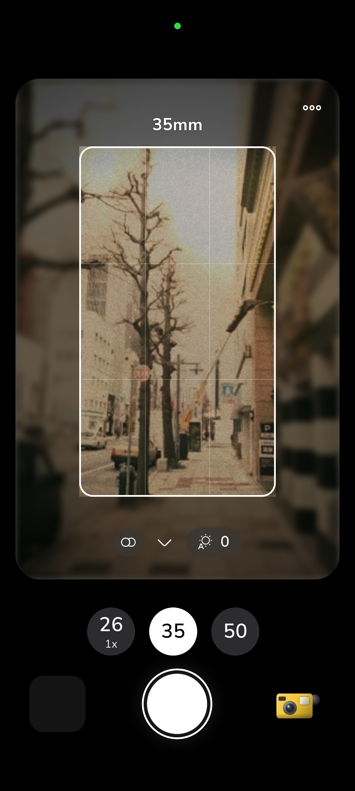

Cơ chế nén hình quang học của thấu kính trụ Cylindrical Glass
Trong lịch sử điện ảnh Hollywood thập niên 1950, để đối phó với sự bùng nổ của màn hình vô tuyến gia đình, các hãng phim đã phát minh ra hệ thống thấu kính anamorphic để trình chiếu định dạng màn hình siêu rộng CinemaScope mà không cần phải thay đổi khổ phim 35mm tiêu chuẩn. Thay vì sử dụng toàn bộ thấu kính cầu (spherical elements) truyền thống, ống kính anamorphic tích hợp các thấu kính trụ đặc biệt có khả năng bóp nghẹt hình ảnh theo chiều ngang theo tỷ lệ 2x hoặc 1.33x, trong khi chiều dọc vẫn giữ nguyên tỷ lệ 1:1.
Khi cuộn phim tráng xong được đưa vào máy chiếu trong rạp, một thấu kính giải nén (de-squeeze) tương ứng sẽ kéo giãn hình ảnh trở lại chiều rộng nguyên bản, tạo ra một tỷ lệ khung hình siêu rộng 2.39:1 đầy choáng ngợp. Kỹ thuật này cho phép khai thác trọn vẹn từng milimét vuông diện tích hữu ích của tấm phim âm bản, đem lại độ chi tiết vượt trội so với việc cắt cúp (crop) viền đen trên dưới đơn thuần.

Vệt quang sai ngang Blue Streak và hiện tượng Oval Bokeh
Dấu ấn thẩm mỹ quyến rũ nhất của quang học anamorphic chính là những vệt lóa sáng kéo dài theo chiều ngang (horizontal streak flares). Khi một nguồn sáng điểm cường độ cao - như đèn pha ô tô, bóng đèn neon hay ngọn nến trong đêm - chiếu trực diện vào mặt trước ống kính, ánh sáng bị phản xạ nội tại giữa các bề mặt thấu kính cong hình trụ và lớp tráng phủ chống phản quang (lens coating). Thay vì tạo ra các vòng tròn lóa đồng tâm như ống kính thông thường, ánh sáng bị kéo dẹt thành một dải tia sáng màu xanh lơ (horizontal blue streak) vắt ngang toàn bộ khung hình.
Đi kèm với đó là hình dạng của các đốm sáng ngoài tiêu cự (bokeh). Do hiện tượng nén quang học 2:1, những đốm sáng hình tròn thông thường sẽ biến đổi thành những quả trứng hình bầu dục dục đứng (oval bokeh) vô cùng duyên dáng. Vùng chuyển nét giữa chủ thể và phông nền phía sau có một độ cuộn hút kỳ ảo, kéo người xem chìm sâu vào trung tâm hành động của nhân vật chính.

Mô phỏng quang sai Anamorphic bằng Shader GPU thời gian thực
Để sở hữu một ống kính anamorphic cổ điển chính hãng ngày nay, các nhà làm phim phải chi trả từ hàng nghìn đến hàng chục nghìn đô la, chưa kể trọng lượng cồng kềnh đòi hỏi hệ thống giá đỡ chuyên dụng. Trong RfCamera, toàn bộ các quy luật quang học phức tạp này được lập trình lại thành các thuật toán xử lý phân mảnh (fragment shaders) chạy trực tiếp trên chip đồ họa của điện thoại.
Shader của RfCamera chủ động phân tích các vùng sáng có cường độ lumen vượt ngưỡng trần, áp dụng ma trận tích chập một chiều theo phương ngang để tạo vệt lóa xanh điện ảnh, đồng thời tái tạo độ méo rìa thùng phuy và lớp quang sai sắc viền tím (chromatic aberration) chân thực, mang lại trải nghiệm bấm máy chuẩn rạp chiếu phim Hollywood ngay trong tầm tay bạn.
